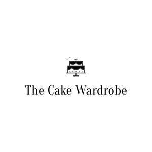

Trade Mark Journal No.2025/011 14 March 2025
UK00004156668 6 February 2025 (16,35,40)
Mark 1
THE CAKE WARDROBE
Mark 2

- Class 16
- Paper and cardboard; printed matter; bookbinding material; photographs; stationery and office requisites, except furniture; adhesives for stationery or household purposes; drawing materials and materials for artists; paintbrushes; instructional and teaching materials; plastic sheets, films and bags for wrapping and packaging; printers' type, printing blocks; adhesives for stationery or household use; adhesives for stationery and household use; adhesives for stationery or household purposes; adhesives [glues] for stationery or household purposes; art and modelling materials and media; bags and articles for packaging, wrapping and storage, of paper, cardboard or plastics; clips (money -); filter material of paper; filtering materials of paper; filtering materials [paper]; filters of paper; money clips; money holders; paper and cardboard; cardboard cake toppers; paper cake decoration; cardboard cake decoration; printed matter, and stationery and educational supplies; works of art and decorations, including figurines, made primarily of paper or cardboard, and architects’ models; paper cake toppers; decorations of cardboard for foodstuffs; decorations of paper for foodstuffs; parts and fittings for all the aforesaid goods.
- Class 35
- Advertising; business management, organization and administration; office functions; advertising, marketing and promotional services; advertising, promotional and marketing services; business assistance, management and administrative services; advertising, marketing and promotion services; marketing, advertising, and promotional services; marketing, advertising and promotion services; retail services in relation to paper and cardboard, printed matter, bookbinding material, photographs, stationery and office requisites, except furniture, adhesives for stationery or household purposes, drawing materials and materials for artists, paintbrushes, instructional and teaching materials, plastic sheets, films and bags for wrapping and packaging, printers' type, printing blocks, adhesives for stationery or household use, adhesives for stationery and household use, adhesives for stationery or household purposes, adhesives [glues] for stationery or household purposes, art and modelling materials and media, bags and articles for packaging, wrapping and storage, of paper, cardboard or plastics, clips (money -), filter material of paper, filtering materials of paper, filtering materials [paper], filters of paper, money clips, money holders, paper and cardboard, cardboard cake toppers, paper cake decoration, cardboard cake decoration, printed matter, and stationery and educational supplies, works of art and decorations, including figurines, made primarily of paper or cardboard, and architects’ models, paper cake toppers, decorations of cardboard for foodstuffs, decorations of paper for foodstuffs; online retail services in relation to paper and cardboard, printed matter, bookbinding material, photographs, stationery and office requisites, except furniture, adhesives for stationery or household purposes, drawing materials and materials for artists, paintbrushes, instructional and teaching materials, plastic sheets, films and bags for wrapping and packaging, printers' type, printing blocks, adhesives for stationery or household use, adhesives for stationery and household use, adhesives for stationery or household purposes, adhesives [glues] for stationery or household purposes, art and modelling materials and media, bags and articles for packaging, wrapping and storage, of paper, cardboard or plastics, clips (money -), filter material of paper, filtering materials of paper, filtering materials [paper], filters of paper, money clips, money holders, paper and cardboard, cardboard cake toppers, paper cake decoration, cardboard cake decoration, printed matter, and stationery and educational supplies, works of art and decorations, including figurines, made primarily of paper or cardboard, and architects’ models, paper cake toppers, decorations of cardboard for foodstuffs, decorations of paper for foodstuffs; information, advisory and consultancy services relating to the aforesaid.
- Class 40
- Treatment of materials; recycling of waste and trash; air purification and treatment of water; printing services; food and drink preservation; air and water conditioning and purification; animals (slaughtering of -); butchering; butchery; duplication of audio and video recordings; energy production; energy (production of -); food and beverage treatment; generation of energy; printing, and photographic and cinematographic development; production of energy; rental of equipment for the treatment and transformation of materials, for energy production and for custom manufacturing; slaughtering; slaughtering of animals; custom manufacturing of paper cake toppers, cardboard cake toppers, paper cake decoration, and cardboard cake decoration; information, advisory and consultancy services relating to the aforesaid.
Wendy Pamela Langford
Representative: Stobbs